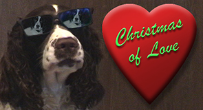
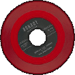
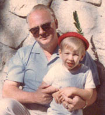

|
Christmas of Love |
 Woody & Bo's puppies! 2004 |
John recorded this instrumental
version with his Fender "Jazzmaster"
electric guitar (multi-tracks) and programmed bass & drums (Roland
synth).
The arrangement is based on the original version of the 1966
cartoon: How the Grinch Stole Christmas. The music was written by
Albert Hague. The Fender Jazzmaster was created as a more up-market instrument than the Stratocaster and it was originally supposed to replace the Telecaster model. John's was built in 1960 and originally purchased by his grandfather as a studio guitar for his own recording studio in North Hollywood. |
|
 |

Words & Music by Grandpa Roy
Stolle |